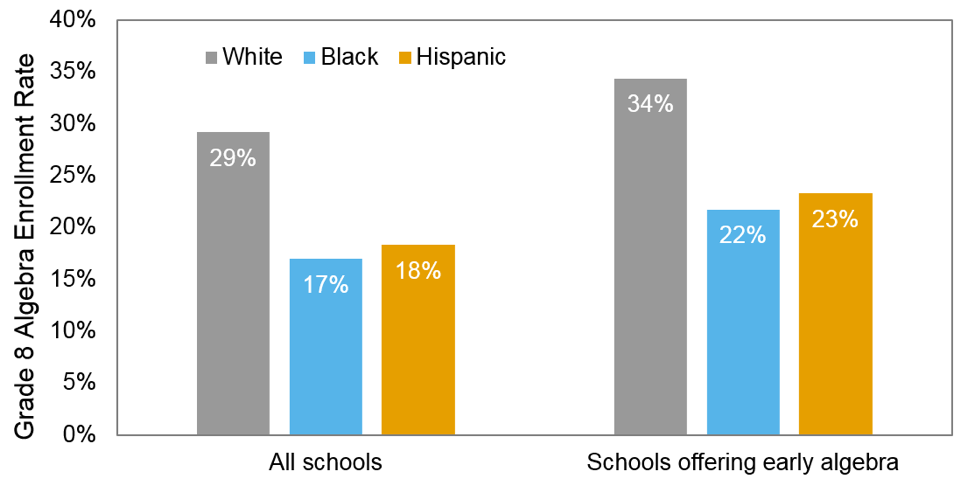

The 8th Grade Algebra Problem: Racial/Ethnic Gaps in Access and Enrollment
If a student wants a STEM career, there’s no better first step than taking Algebra in eighth grade. However, our analysis of recently released data indicate that African American and Hispanic students aren’t taking this pivotal course at the same rate as their White peers, with large enrollment gaps occurring in districts across the nation.
For the first time, the 2015-16 wave of U.S. Department of Education’s Civil Rights Data Collection asked every U.S. public school district to report 8th grade algebra enrollment disaggregated by race and ethnicity. This population-wide dataset provided an unprecedented opportunity to examine how enrollment gaps vary at a fine level of detail.
We analyzed these data, along with enrollment data from the Common Core of Data and achievement data from the Stanford Educational Data Archive (SEDA), to study how racial and ethnic disparities in 8th grade algebra enrollment and opportunity vary across the nation.
Why does it matter if a student doesn’t take eighth grade Algebra?
Although typically offered in ninth grade, students who enroll in eighth grade Algebra position themselves to take important classes like Calculus before the end of high school. Students who do not take Algebra early but want to take Calculus are forced to play “catch up” by doubling up on classes (if allowed) or taking summer school. Many consider higher-level math like Calculus to be an important precursor to a STEM career; taking Calculus has been strongly linked to increased interest in STEM careers and eventually obtaining a STEM degree. For these reasons, eighth grade Algebra is often seen as a “gatekeeper” course to higher-level math courses. Some, such as activist and educator Bob Moses, even consider early access to algebra to be a civil right given its importance. With lower enrollment rates, African American and Hispanic students may be at a disadvantage when it comes to obtaining a STEM degree.
Critically, students do not decide to take 8th grade algebra: schools typically place students into the course if they are deemed ready and if the school offers the course. Hence, student enrollment rates are largely determined at the school level. However, a few states have policies which govern the math courses students can take. For instance, Minnesota mandates that students complete Algebra by the end of eighth grade, essentially enacting an “Algebra for all” model. California had been moving towards an Algebra for all approach since the late 90s, with their school board formalizing this policy in 2008 by requiring eighth grade Algebra. Within a few years of this decision, the requirement was overturned as the state moved to Common Core math, effectively shifting Algebra to ninth grade for nearly all students.
White Students Enroll in 8th Grade Algebra at Higher Rates, But Gaps Vary Widely Across the Nation
Across the nation, White students are more likely to enroll in 8th grade algebra than their Black and Hispanic classmates. In the 2015-16 school year, 17% of Black and 18% of Hispanic eighth grade students took the course, compared to 29% of White students, corresponding to a 12-percentage point enrollment gap for Black versus White students and 11-point gap for Hispanic versus White students.
However, these gaps vary considerably across the nation. The map below allows users to explore geographic variation at state and district levels. The White-Black gap exceeds 15 percentage points in 22 states, with Pennsylvania showing the highest state-level gap. Only one state, Idaho, had a greater percentage of Black 8th graders enrolled in algebra than White 8th graders.
Though these enrollment gaps are easy to find, identifying their source is harder. Below, we dive deeper into two possible sources of this gap: differential access to schools with eighth grade Algebra and differential placement in schools that offer the course.
Who Has Opportunity to Take 8th Grade Algebra?
Black and Hispanic students may lack access to eighth grade algebra if they attend schools that do not offer it. Inequities in funding, teacher placement, and other resources could prevent schools from offering the course, depriving students of the opportunity to even consider taking it. Hence, gaps in access could explain gaps in enrollment. We found that access gaps vary widely across districts, though most 8th grade students attend schools offering the course.
We defined access to early algebra as attending a school that offered Algebra I in 7th or 8th grade (i.e., at least one 7th or 8th grade student at the school took the course in the 2015-16 school year). Based on this definition, 78% of Black and 79% of Hispanic eighth grade students had access to early algebra, compared to 85% of White students. These national statistics therefore show modest overall gaps in access.
These national gaps in access, however, cannot explain the national gaps in enrollment. The graph below demonstrates this point by comparing enrollment gaps among all schools (left side) versus schools offering early algebra (right side). The enrollment gaps on the graph’s right side cannot be attributed to differential access because, by definition, 100% of students at those schools had access. As expected, overall enrollment rates are higher when restricting analyses to the subset of schools offering the course. However, the enrollment gaps are just as large.
Although access gaps cannot explain overall national enrollment gaps, a closer analysis reveals that differential access remains an important problem in several specific districts, underscoring the importance of basing decisions on local data. We illustrate this point by showing gaps for the top 100 largest districts based on total grade 8 enrollment size.
Differential access cannot explain many of large enrollment gaps because, in many districts, near-100% of Black and White students have access to early algebra.
However, the right side of the graphic also demonstrates clear exceptions to this general rule. For instance, Chicago Public Schools had the largest Black-White access gap among all of the top 100 largest school districts. In that district, 37% of Black eighth grade students attended schools offering early algebra, compared to 93% of White students, representing a 60-point gap in access. The graph shows other districts with large access gaps such as Atlanta City School District (41-point gap), DeKalb County School District (23-point gap), and San Antonio Independent School District (20-point gap).
For the districts with large access gaps, one starting point could be to examine the factors such as teacher placement or resource allocation that lead to large gaps in opportunity. However, our analysis also shows that simply providing access to all students does not ensure equal rates of participation. Districts must also examine the within-school placement decisions that lead to large gaps in enrollment.
Differential Placement
Attending a middle school that offers Algebra I does not imply that all students will take Algebra I. How students select or are placed into algebra in 8th grade differs across districts and schools, but prior math achievement is usually an important factor for placement (citations?). If course placement decisions are dictated by prior achievement, with higher achieving students placed in an algebra course and lower achieving students placed in a standard 8th grade math course, then racial gaps in achievement that exist prior to 8th grade could account for gaps in algebra enrollment.
While we do not have access to detailed student achievement data, we can utilize math test score data from the Stanford Education Data Archive (citation) to approximate racial achievement gaps for districts with available test data. We used average test scores translated into grade level equivalence to calculate achievement gaps, where a score of zero means the student’s achievement is at grade level, a score of -1 means the student’s achievement is one grade below where it should be, and a score of +1 means the student’s achievement is one grade above where it should be.
Across all districts in our analysis, the average black student is in a district with a white-black test score gap of 2.2 grade levels, implying the average white student is more than 2 grade levels above the average black student in math. Similarly, the average Hispanic student is in a district with a white-Hispanic test score gap of 1.5 grade levels. These test score gaps reflect the accumulation of racial disparities that persist from birth through elementary school (citations?).
District 8th grade algebra enrollment gaps, however, are only moderately related to existing test score gaps. Differences in test score gaps across districts account for about 18% of the differences in white-black enrollment gaps and 11% of the differences in white-Hispanic enrollment gaps.
In other words, even when looking at districts where the test score gap is similar, the enrollment gap can differ widely across those districts. For example, the white-black test score gap is approximately 2.5 grade levels in Howard County (MD), Broward County (FL), and Dallas (TX), but the enrollment gap in those districts is, respectively, 3 points, 15 points, and 35 points.
Because enrollment gaps do not directly mirror test score gaps in most districts, other factors besides differences in prior achievement likely contribute to enrollment gaps. For example, state and district math curriculum policies and the ways in which districts and schools determine “readiness” for advanced math courses can play an important role.
More indepth research is needed to identify these factors, and understand how they promote or hinder equitable access to advanced mathematics. [Could insert something about our work in Elk Grove, Chicago, and Oakland. Could also insert something from Rickles, 2011.]